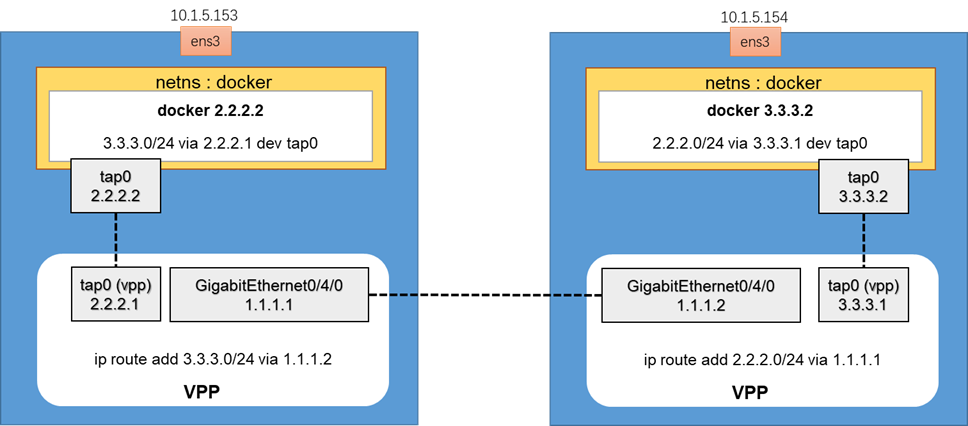

5. VPP_TAP_INT_Containers2
date: 2023-02-05

docker pull alpine:3.17.1
cat << EOF > Dockerfile
FROM alpine:3.17.1
ENV TZ Asia/Shanghai
RUN sed -i 's/dl-cdn.alpinelinux.org/mirrors.ustc.edu.cn/g' /etc/apk/repositories
RUN apk add --update --no-cache bash tcpdump iperf busybox-extras iproute2 iputils tzdata
RUN cp /usr/share/zoneinfo/\${TZ} /etc/localtime \
&& echo \${TZ} > /etc/timezone && rm -rf /var/cache/apk/*
EOF
docker build -t amwork2010/alpine:iperf .
# 153
vppctl
set interface state GigabitEthernet0/4/0 up
set interface ip address GigabitEthernet0/4/0 1.1.1.1/24
create tap
set interface state tap0 up
set interface ip address tap0 2.2.2.1/24
ip route add 3.3.3.0/24 via 1.1.1.2
#Assign tap interface address on kernel interface
#sudo ip addr add 2.2.2.2/24 dev tap0
#sudo ip link set tap0 up
#ip route add 3.3.3.0/24 via 2.2.2.1
#ping 3.3.3.1 --> OK
ip addr flush dev tap0
#Create docker containers
docker pull amwork2010/alpine:iperf
docker run -d --name "docker" amwork2010/alpine:iperf sleep 36000
#Wait for containers
sleep 10
pid1=`docker inspect -f '{{.State.Pid}}' docker`
ln -s /proc/$pid1/ns/net /var/run/netns/docker
docker network disconnect bridge $(docker exec -it docker bash -c hostname | tr -d '\r\n')
ip link set tap0 netns docker
ip netns exec docker ip addr add 2.2.2.2/24 dev tap0
ip netns exec docker ip link set tap0 up
ip netns exec docker ip route add 3.3.3.0/24 via 2.2.2.1
# 154
vppctl
set interface state GigabitEthernet0/4/0 up
set interface ip address GigabitEthernet0/4/0 1.1.1.2/24
create tap
set interface state tap0 up
set interface ip address tap0 3.3.3.1/24
ip route add 2.2.2.0/24 via 1.1.1.1
# ip route del 2.2.2.0/24 via 1.1.1.2
#Create docker containers
docker pull amwork2010/alpine:iperf
docker run -d --name "docker" amwork2010/alpine:iperf sleep 36000
#Wait for containers
sleep 10
pid2=`docker inspect -f '{{.State.Pid}}' docker`
ln -s /proc/$pid2/ns/net /var/run/netns/docker
docker network disconnect bridge $(docker exec -it docker bash -c hostname | tr -d '\r\n')
ip link set tap0 netns docker
ip netns exec docker ip addr add 3.3.3.2/24 dev tap0
ip netns exec docker ip link set tap0 up
ip netns exec docker ip route add 2.2.2.0/24 via 3.3.3.1
ip netns exec docker ping 2.2.2.2
# ping OK